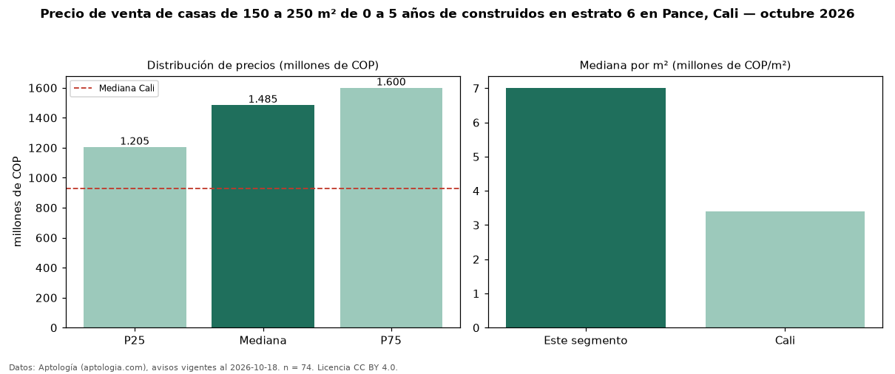

Precio de venta de casas de 150 a 250 m² de 0 a 5 años de construidos en estrato 6 en Pance, Cali — octubre 2026
En Pance, Cali, la mediana de precio de venta de casas de 150 a 250 m² de 0 a 5 años de construidos en estrato 6 es COP 1,49 mil millones, según 74 avisos vigentes. Eso es 3 % más que la mediana de las casas de 150 a 250 m² en estrato 6 en venta de Pance (COP 1,44 mil millones, n = 102); este segmento reúne el 73 % de esos avisos. Por metro cuadrado, la mediana es COP 7,01 millones/m² (n = 73), 4 % por encima de las casas de 150 a 250 m² en estrato 6 en venta de Pance (COP 6,73 millones/m²). El área mediana anunciada es 211 m². El segmento con más oferta es el de 3 o más habitaciones (74 avisos, mediana COP 1,49 mil millones). La administración mediana declarada es COP 1,17 millones al mes (n = 59). La mediana de todas las casas en venta de Cali es COP 930 millones (+60 % de diferencia). La mitad central de los avisos va de COP 1,21 mil millones a COP 1,60 mil millones (razón 1,3), una dispersión baja. Datos: Aptología (aptologia.com), CC BY 4.0 — https://www.aptologia.com/casas-en-venta/cali/pance. Archivos: PDF, CSV con las cifras y gráfica PNG.

| Avisos únicos | 74 |
|---|---|
| Percentil 25 | COP 1.205.000.000 |
| Mediana | COP 1.485.000.000 |
| Percentil 75 | COP 1.600.000.000 |
| Mediana por m² | COP 7.013.574 |
Fuente: avisos vigentes de portales inmobiliarios recopilados por Aptología, deduplicados (mínimo 30 avisos únicos por celda). Precios pedidos, no cerrados. Fecha: 2026-10-18.